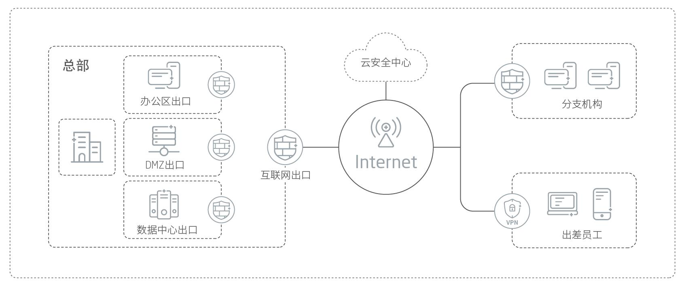

产品概述
赛博特安国产化防火墙系列产品是基于国产化硬件平台和国产操作系统自主研发的下一代防火墙产品，其通过模块化设计，集防火墙、VPN、DoS/DDoS攻击防御、入侵防御、防病毒、邮件过滤、URL过滤、应用协议识别与控制等多项尖端安全技术于一身，为用户提供安全可信的一体化边界安全解决方案。
应用价值
赛博特安国产化防火墙可部署于外网出口和内网边界，实施访问控制、攻击防御、入侵防御、身份认证、带宽管理、企业分支互联等安全措施，为用户提供安全、稳定、健壮的网络环境。
产品亮点
自主创新，高可靠、高性能
赛博特安国产化防火墙支持多种国产化硬件平台和国产操作系统，产品通过平台化技术架构，实现了硬件平台层与操作系统层的深度结合，进而完成多平台、多系统的快速融合。同时，赛博特安防火墙在特性设计研发方面，针对国产芯片指令集的系统做了深度优化，结合赛博特安高性能的网络架构和一体化的检测引擎技术，发挥出国产芯片多核处理器的潜力，使得产品在性能和稳定性方面具备一定优势。
软硬结合的多重灾备，提升运营可靠性
赛博特安国产化防火墙具有软硬件结合的强大灾备处理能力。在软件功能上，支持HA、Channel、冗余接口、VPN冗余网关、链路备份、负载均衡等多种灾备解决方案，保证应用访问业务的连续性、增强运营可靠性。在硬件设计上，系统采用单/双电源冗余设计，网络接口硬件Bypass设计。在极端硬件故障情况下，赛博特安国产化防火墙仍可保障数据业务的连贯性。
极强的网络适应性，支持IPv4/IPv6双栈部署
支持透明模式、路由模式和混合模式等多种部署方式接入网络，满足绝大多数部署需求。全面支持IPv4/IPv6双栈及应用层检测技术，可自如应对IPv4和IPv6网络安全挑战。
灵活、安全的VPN，解决远程连接的安全性问题
IPSec VPN、SSL VPN和GRE VPN三合一，支持多种部署方式，选择更灵活。支持多重认证方式，支持国密加密算法和国际通用加密算法，数据安全无懈可击。
一体化的安全防护，全面保护网络安全
采用业界领先的DPI技术，基于端口/IP、用户、服务、应用及内容的访问控制，高效、精准识别与管控网络应用，实现L2-L7层全面防护，保护合规的应用流量；可对办公、社交、P2P、即时通讯、娱乐等各类应用流量进行有针对性的放行、限流或拦截，有效管控上网行为。
应用场景

产品规格
| 产品形态 | 1U机架式 |
| 本地存储 | 1TB |
| 接口规格 | 8个千兆电口 |
| 扩展槽 | 1个扩展槽，可扩展8个千兆光口或2/4个万兆光口 |
| 电源 | 单电源/冗余电源 |
| 硬件 | 飞腾处理器 |
| 操作系统 | 银河麒麟/NOS |